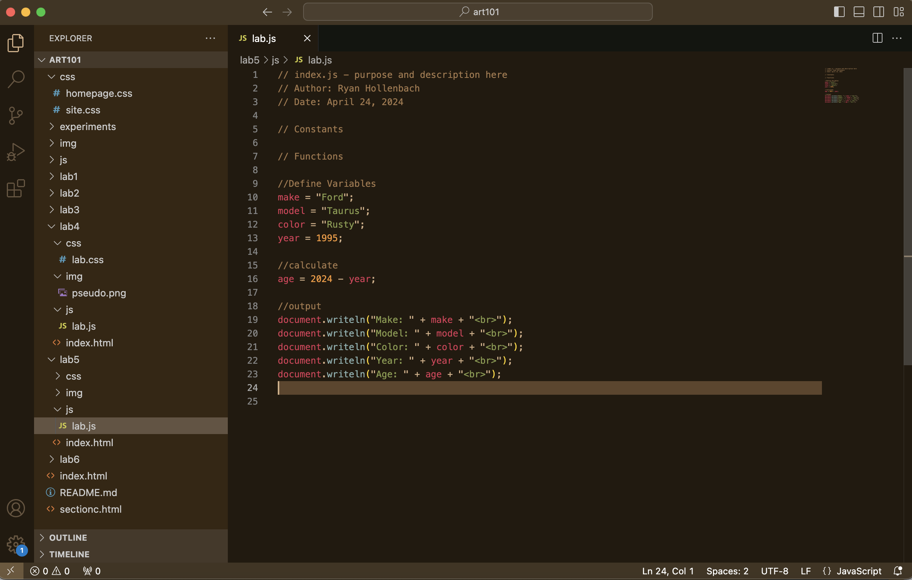

Lab 5: Data Types and Variables
Challenge
The challenge was to utilize the console tool in the google chrome and to understand how variables and data types work.
Problems
Not many problems arose in this Lab, This was soemthing that my partner and I have done before in the past so it was a nice refresher to jump back into.
Reflection
This lab went very well. My partner and I had little to no problems and got through it fairly easily.
Results
Script Output
